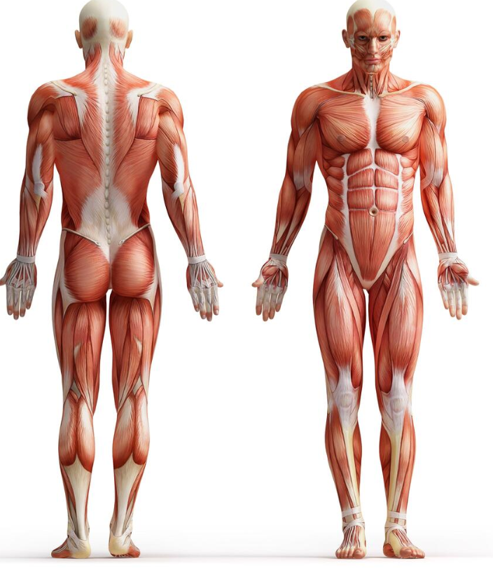

<!-- Feature Toggle -->
<!-- <div class="feature-toggle">
  <button type="button" class="toggle-btn" [class.active]="activeFeature === 'polygon'"
    (click)="setActiveFeature('polygon')">
    <i class="pi pi-image"></i>
    Muscle Polygon Tool
  </button>

</div> -->

<!-- Muscle Polygon Feature -->
<div class="feature-section" *ngIf="activeFeature === 'polygon'">
  <!-- <button type="button" class="region-select-btn" (click)="startPolygonSelection()">Select Muscle Polygon</button>
  <br /><button type="button" class="region-select-btn" (click)="finishPolygon()"
    [disabled]="!polygonSelectionActive">Finish
    Polygon</button>
  <br />
  <button type="button" class="region-select-btn" (click)="downloadPolygons()">Download Polygons JSON</button> -->

  <div class="container">
    <!-- <h2>Hover over the image to see the coordinates</h2>

    <div class="coords-display">
      Coordinates: (X: {{ mouseX }}, Y: {{ mouseY }})
    </div>
    <div class="hovered-part">
      Hovered Part: {{ hoveredPart }}
    </div> -->

    <div class="image-map-container" (mousemove)="onMouseMove($event)">
      

      <!-- SVG overlay for all saved polygons (render only if selected) -->
      <svg [attr.width]="imageWidth" [attr.height]="imageHeight" class="polygon-overlay">
        @for(part of bodyParts; track part){
          @if(part.polygon && part.polygon.length > 1){
            @if(selectedParts.includes(part.name)){
              <polygon [attr.points]="getPolygonPointsString(part.polygon)"
                fill="rgba(26, 54, 93, 0.3)" />
            }
          }
        }
      </svg>

      <!-- Floating tooltip for the hovered muscle -->
      <div *ngIf="hoveredPart && hoveredPart !== 'None'" class="muscle-tooltip"
        [style.left.px]="tooltipX + 15" [style.top.px]="tooltipY + 15">
        {{ hoveredPart }}
      </div>

      <!-- SVG overlay for polygon selection (in-progress) -->
      @if(polygonSelectionActive && currentPolygon.length > 1){
      <svg [attr.width]="imageWidth" [attr.height]="imageHeight" class="polygon-overlay">
        <polygon [attr.points]="polygonPointsString" fill="rgba(0,123,255,0.3)" stroke="#007bff" stroke-width="2" />
        @for(pt of currentPolygon; track pt){
        <circle [attr.cx]="pt.x" [attr.cy]="pt.y" r="4" fill="#007bff" />
        }
      </svg>
      }

      @for(part of bodyParts; track part){
      @if(part.x_min !== undefined && part.x_max !== undefined && part.y_min !== undefined && part.y_max !== undefined)
      {
      <div class="body-part-overlay" [class.hovered]="hoveredPart === part.name" [style.left.px]="part.x_min"
        [style.top.px]="part.y_min" [style.width.px]="part.x_max - part.x_min"
        [style.height.px]="part.y_max - part.y_min"></div>
      }

      }
    </div>
  </div>
</div>